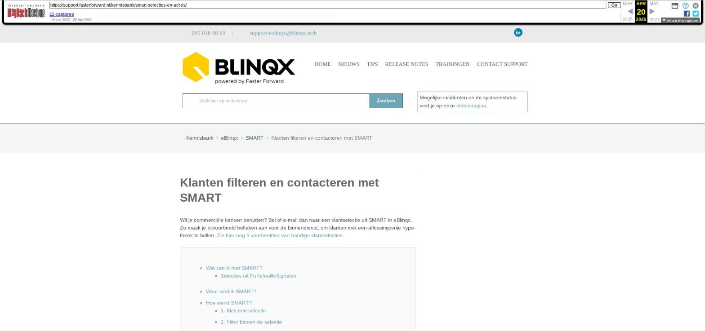

Klanten filteren en contacteren met SMART

Tekstinhoud
Klanten filteren en contacteren met SMART
Wil je commerciële kansen benutten? Bel of e-mail dan naar een klantselectie uit SMART in eBlinqx. Zo maak je bijvoorbeeld beltaken aan voor de binnendienst, om klanten met een aflossingsvrije hypotheek te bellen. Zie hier nog 6 voorbeelden van handige klantselecties.
Wat kan ik met SMART?
Selecties uit PortefeuilleSignalen
Waar vind ik SMART?
Hoe werkt SMART?
1. Kies een selectie
2. Filter binnen de selectie
3. Kies een actie
Historie van acties
Wat kan ik met SMART?
SMART maakt slimme overzichten voor de adviseur of de binnendienst. Denk aan jongeren (familielid van een van je klanten) die bijna 18 worden. Wanneer je eerder al de hypotheek van de familie De Jong verzorgde, is het attent dat je ze nu ook attendeert op de eigen zorgverzekering van de bijna 18-jarige.
Daarnaast zie je welke dossiers incompleet zijn, zodat je deze actualiseert met de ontbrekende gegevens. Klanten zonder e-mailadres, maar met wel een telefoonnummer heb je dan ook gelijk inzichtelijk.
Ook kan je filteren op klanten met of juist zonder een bepaald product (maximaal 2 filters). Daarnaast filter je o.a. op datum, maatschappij, type product en offertestatus. Verschillende voorbeelden van slimme selecties:
Klanten met een aflossingsvrije hypotheek
Klanten zonder inboedelverzekering
Klanten met een schadeverzekering, maar zonder aansprakelijkheidsdekking
Klanten met minstens één hypotheek, maar zonder opstalverzekering
Klanten met rechtsbijstand module A, maar zonder module B
Selecties uit PortefeuilleSignalen
Verder worden er signalen opgehaald uit PortefeuilleSignalen van De Nationale Hypotheekbond. Dit zijn mogelijkheden in jouw klantenportefeuille voor oversluiten, renteverlagingen, topafslagen, goedkopere ORV's en verhuizers. Let op! deze selecties zijn alleen te op te halen wanneer je gebruik maakt van de hypotheekbond koppeling met eBlinqx.
Waar vind ik SMART?
De SMART module vind je bovenin het menu balk onder het verrekijker icoon:
Indien je dit icoon niet ziet, heb je mogelijk de rechten niet hiervoor. Stuur hiervoor een e-mail naar support-eblinqx@blinqx.tech
Hieronder wordt stap voor stap uitgelegd hoe je gebruik kunt maken van deze module.
Hoe werkt SMART?
1. Kies een selectie
Kies een van de beschikbare selecties door op de naam van de selectie te klikken of het trechtericoontje.
Let op! Het is niet mogelijk om een selecties op maat te maken. Indien je een selectie met bepaalde informatie mist, kun je deze altijd insturen als wens naar support-eblinqx@blinqx.tech.
2. Filter binnen de selectie
Stel de gewenste filter in aan de linkerzijde en klik vervolgens op de knop 'filter selectie'.
In de SMART module kun je binnen elke selectie ook eenvoudig filteren, zoeken op gevulde cellen, lege cellen of een specifiek (deel van een) woord. Onder het i-icoon kan je zien welke filters je kunt toepassen:
Deze filters kan je invullen in de filters per kolom.
3. Kies een actie
Wanneer de gewenste selectie gemaakt is, kun je vervolgens een actie daarop uitvoeren. Hierbij heb je de keuze uit de volgende acties (afhankelijk van de gekozen selectie):
Taken aanmaken
Campagne aanmaken
Naar Excel exporteren
Event aanmaken
Selecteer de gefilterde selectie door op de checkbox linksboven te klikken. Hiermee worden alle regels geselecteerd. Indien gewenst kan je ook een losse regel uitsluiten door de checkbox links in de regel uit te vinken. Of je kan regels één voor één selecteren door de checkbox voor deze regel aan te vinken.
Klik vervolgens op de gewenste actie knop boven de selectie, bijvoorbeeld 'Maak taken' en vul alle velden in voor het aanmaken van de taken.
Wanneer je klikt op 'Taken maken' wordt je er nog op geattendeerd op de actie die je gaat uitvoeren. Hier dien je te bevestigen dat je de actie daadwerkelijk wilt uitvoeren.
Historie van acties
In de SMART module vind je ook de knop 'Uitgevoerde SMART acties'.
Hier kan je zien welke acties er op een bepaalde selectie zijn uitgevoerd, door wie en wanneer.
Laatste update: 30 december 2025
Was deze informatie nuttig?
Ja Nee